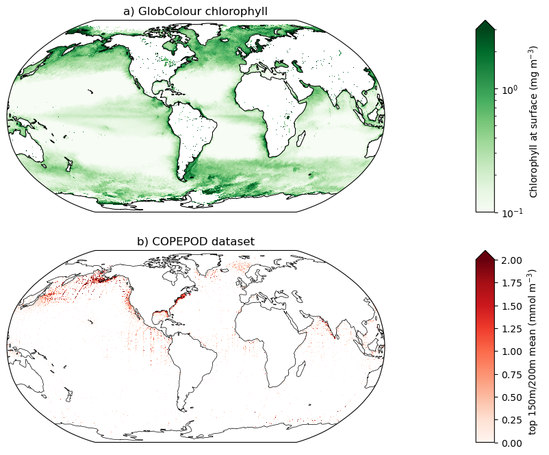

import numpy as np
import math
import xarray as xr
import matplotlib
import matplotlib.pyplot as plt
%matplotlib inline
from glob import glob
import cartopy
import cartopy.crs as ccrs
import metpy.calc as mpcalc
import warnings
warnings.filterwarnings('ignore')
from scipy import stats
import pop_tools
import matplotlib.path as mpath
import dask
import pandas as pd
import copernicus_marine_client as copernicus_marine
import os
import urllib
import subprocess
import matplotlib.gridspec as gridspec
import matplotlib.colors as colors
Getting GlobColour chlorophyll concentration satellite data
### need to get a generic set of login credentials and provide a file to input those
ds_sat = copernicus_marine.open_dataset(
dataset_id = 'c3s_obs-oc_glo_bgc-plankton_my_l3-multi-4km_P1D',
variables= ['CHL'],
start_datetime = "2012-01-01",
end_datetime = "2012-12-31",
)
ds_sat
INFO - 2024-01-08T22:56:39Z - Selected dataset version is "202303"
INFO - 2024-01-08T22:56:39Z - Selected dataset part is "default"
INFO - 2024-01-08T22:56:44Z - Selected service is "CopernicusMarineDatasetServiceType.GEOSERIES"
username:
password:
<xarray.Dataset>
Dimensions: (time: 366, latitude: 4320, longitude: 8640)
Coordinates:
* latitude (latitude) float64 -89.98 -89.94 -89.9 ... 89.9 89.94 89.98
* longitude (longitude) float64 -180.0 -179.9 -179.9 ... 179.9 179.9 180.0
* time (time) datetime64[ns] 2012-01-01 2012-01-02 ... 2012-12-31
Data variables:
CHL (time, latitude, longitude) float32 ...
Attributes: (12/38)
Conventions: CF-1.7
Creation_time: 08:52:33 UTC
Metadata_Conventions: Unidata Dataset Discovery v1.0
Naming_authority: CMEMS
Netcdf_version_id: V4
citation: The licensees should respect the Copernicus Mari...
... ...
start_time: 00:00:00 UTC
stop_date: 1997-09-04
stop_time: 23:59:00 UTC
summary: Data products generated by the Ocean Colour comp...
title: c3s_obs-oc_glo_bgc-plankton_my_l3-multi-4km_P1M
westernmost_longitude: -180ds_sat = ds_sat.mean(dim='time')
Getting COPEPOD data
url = 'https://www.st.nmfs.noaa.gov/copepod/biomass/copepod-2012__biomass-fields.zip'
local_file = 'data/orig/copepod-2012__biomass-fields.zip'
os.makedirs(os.path.dirname(local_file), exist_ok=True)
if not os.path.exists('data/orig/copepod-2012__biomass-fields'):
urllib.request.urlretrieve(url, local_file)
subprocess.run(['unzip', '-d', 'data/orig', local_file])
def csv2nc(f):
"""Convert csv file to Xarray dataset"""
lon = xr.DataArray(np.arange(-180 + 0.125, 180., 0.25), dims=('lon'), name='lon')
lat = xr.DataArray(np.arange(-90 + 0.125, 90., 0.25), dims=('lat'), name='lat')
rename_dict = {
'Longitude': 'lon',
'Latitude': 'lat',
'Total Carbon Mass (mg-C/m3)': 'copepod_C',
'n': 'n_obs',
}
attrs = dict(
copepod_C=dict(
units='mg-C m$^{-3}$',
long_name='Total Carbon Mass',
)
)
keep_vars = list(rename_dict.values())
df = pd.read_csv(f).rename(rename_dict, axis=1)[keep_vars].set_index(['lon', 'lat'])
_, ds = xr.align(xr.Dataset(dict(lon=lon, lat=lat)), df.to_xarray(), join='outer')
for v in attrs:
ds[v].attrs = attrs[v]
ds.attrs['file_in'] = f
return ds.transpose('lat', 'lon')
dirout = 'data/0_25x0_25'
os.makedirs(dirout, exist_ok=True)
clobber = True
files_csv = sorted(glob('data/orig/copepod-2012__biomass-fields/data/copepod-2012__cmass-m??-qtr.csv'))
files_jpg = sorted(glob('data/orig/copepod-2012__biomass-fields/images/copepod-2012__cmass-m??.jpg'))
for file_csv in files_csv:
file_zarr = f"{dirout}/{os.path.basename(file_csv).replace('csv', 'zarr')}"
ds = csv2nc(file_csv)
if not os.path.exists(file_zarr) or clobber:
ds.to_zarr(file_zarr, mode='w')
#file = '/glade/u/home/kristenk/work/copepod-biomass/data/POP_gx1v7/copepod-2012__cmass-m00-qtr.zarr'
file = 'data/0_25x0_25/copepod-2012__cmass-m00-qtr.zarr'
ds_copepod = xr.open_dataset(file, engine="zarr")
### explain this unit conversion - assuming grams to moles?
ds_copepod['copepod_C']=ds_copepod.copepod_C/12.011
ds_copepod
<xarray.Dataset>
Dimensions: (lat: 720, lon: 1440)
Coordinates:
* lat (lat) float64 -89.88 -89.62 -89.38 -89.12 ... 89.38 89.62 89.88
* lon (lon) float64 -179.9 -179.6 -179.4 -179.1 ... 179.4 179.6 179.9
Data variables:
copepod_C (lat, lon) float64 nan nan nan nan nan ... nan nan nan nan nan
n_obs (lat, lon) float64 ...
Attributes:
file_in: data/orig/copepod-2012__biomass-fields/data/copepod-2012__cmass...### add some more labels to this plot, or another version of it to show both quick and detailed
#ds_copepod['copepod_C'].plot()
plt.pcolormesh(ds_copepod.lon, ds_copepod.lat, ds_copepod.copepod_C, cmap='Reds', vmin=0, vmax=2)
<matplotlib.collections.QuadMesh at 0x14a5f9016690>
Make the chlorophyll and copepod maps
ds_grid_x1 = pop_tools.get_grid('POP_gx1v7')
lons_x1=ds_grid_x1.TLONG
lats_x1=ds_grid_x1.TLAT
fig = plt.figure(figsize=(10, 8))
gs = gridspec.GridSpec(nrows=2, ncols=2, width_ratios=(1, 0.04))
prj = ccrs.Robinson(central_longitude=305.0)
ax_chl_sat = plt.subplot(gs[0, 0], projection=prj)
ax_meso_cope = plt.subplot(gs[1, 0], projection=prj)
ax_chl_sat.set_title('a) GlobColour chlorophyll', fontsize=12)
pc_chl_sat=ax_chl_sat.pcolormesh(ds_sat.longitude, ds_sat.latitude, ds_sat.CHL,
cmap='Greens',norm=colors.LogNorm(vmin=0.1, vmax=3),
transform=ccrs.PlateCarree())
ax_chl_sat.coastlines('110m',linewidth=0.75)
ax_meso_cope.set_title('b) COPEPOD dataset', fontsize=12)
pc_meso_cope=ax_meso_cope.pcolormesh(ds_copepod.lon, ds_copepod.lat, ds_copepod.copepod_C, cmap='Reds',vmin=0,vmax=2,transform=ccrs.PlateCarree())
ax_meso_cope.coastlines('110m',linewidth=0.5)
cax_chl = plt.subplot(gs[0, 1])
cax_meso = plt.subplot(gs[1, 1])
cb_chl = plt.colorbar(pc_chl_sat, cax=cax_chl,extend='max',
label='Chlorophyll at surface (mg m$^{-3}$)')
cb_meso = plt.colorbar(pc_meso_cope, cax=cax_meso,extend='max', label='top 150m/200m mean (mmol m$^{-3}$)')
### why is land getting a nonzero value? fix through mask or otherwise
#fig.savefig('/glade/work/kristenk/figs/chl_copepod_comparison_x1.png', bbox_inches='tight', dpi=300, format='png');
